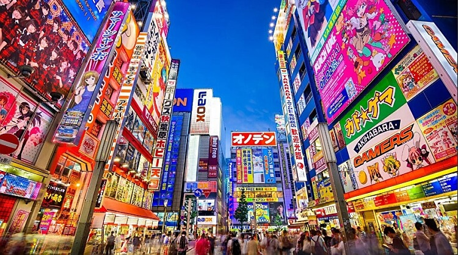

Japonya, Doğu Asya'nın İncisi

Japonya, Doğu Asya'da yer alan bir ada ülkesidir ve büyük teknoloji
atılımları, kültürel derinliği ve benzersiz doğası ile bilinir. İşte
Japonya hakkında bazı temel bilgiler:
Coğrafya:
Japonya, dört ana ada
(Honshu, Hokkaido, Kyushu ve Shikoku) ve sayısız küçük adadan oluşur.
Ülkenin büyük bir kısmı dağlıktır ve en ünlü dağı, simgesi haline gelen
Fuji Dağı'dır. Başkent:
Tokyo, Japonya'nın başkenti ve aynı zamanda
dünyanın en büyük ve en kalabalık şehirlerinden biridir. Hem modern
gökdelenler hem de geleneksel tapınaklarıyla ünlüdür. Kültür:
Japon
kültürü, tarih boyunca gelişen geleneksel değerlerle modern unsurları bir
arada yaşatır. Samuray kültürü, Zen Budizmi, çay seremonileri, kiraz
çiçeği festivali (Hanami), kimono giysisi gibi unsurlar Japon kültürünün
önemli parçalarıdır. Bunun yanı sıra, anime, manga ve video oyunları gibi
popüler kültür ürünleri de dünyaya büyük etki yapmıştır. Teknoloji ve
Ekonomi:
Japonya, teknoloji devleriyle tanınır. Sony, Toyota, Honda,
Panasonic gibi markalar dünya çapında bilinir. Yüksek hızlı trenler
(Shinkansen), robot teknolojileri ve yapay zeka Japonya'nın modern
teknolojisinin simgelerindendir. Tarih:
Japonya, uzun bir feodal dönem
boyunca samuray sınıfının egemen olduğu bir toplumdu. 1603-1868 yılları
arasındaki Edo Dönemi, Japonya'nın dış dünyaya kapalı kaldığı, ancak iç
ekonomisinin ve kültürünün geliştiği bir dönemdi. 1868’de Meiji
Restorasyonu ile Japonya hızla modernleşmeye başladı. II. Dünya
Savaşı'ndan sonra, Japonya barışçıl bir anayasayı kabul ederek hızla
büyüyen bir ekonomi haline geldi. Mutfak:
Japon mutfağı dünya çapında
popülerdir. En bilinen yiyecekler arasında sushi, ramen, tempura ve
sashimi yer alır. Japon mutfağı, taze deniz ürünleri, sebzeler ve pirinç
gibi temel malzemelerle hazırlanır ve sade ama lezzetli sunumlarla dikkat
çeker. Gezilecek Yerler:
Japonya'da mutlaka görülmesi gereken yerler
arasında:
Kyoto: Geleneksel tapınaklar ve bahçeler.
Hiroşima: II. Dünya
Savaşı'nın atom bombası saldırısının izlerini taşıyan şehir.
Osaka:
Japonya'nın büyük sanayi ve iş merkezlerinden biri.
Fuji Dağı: Japonya'nın
en yüksek dağı ve simgesi. Hokkaido: Doğal güzellikleri, kayak merkezleri
ve festivalleriyle ünlü. Doğa:
Japonya'nın dört mevsimi belirgin şekilde
yaşanır ve her mevsim kendine özgü güzellikler sunar. İlkbaharda kiraz
çiçekleri (sakura), yazın plajlar ve festivaller, sonbaharda yaprak dökümü
manzaraları ve kışın kayak merkezleri çok popülerdir.
Japonya, tarih ile
modernliği bir arada sunan bir ülke olduğu için hem kültürel hem de
teknolojik açıdan çok farklı ve etkileyici bir yerdir.